4D referring segmentation
HumanSkill-4D
Training-free language querying of animatable Gaussian avatars in space and time.
I am interested in 2D/3D representation learning, vision foundation models, and AI agents.
I am a Combined MS/PhD student at UNIST AIGS, advised by Prof. Seungryul Baek. I received my B.S. in Information and Communications Engineering from Pukyong National University, where I worked with Prof. Hoon Lee on deep learning–based autonomous driving and edge AI for swarm vehicles.
At UNIST, I work on continual learning for object detection, few-shot class-incremental learning with diffusion models, benchmark reliability, and 3D Gaussian Splatting. As a research intern at NAVER AI Lab (Backbone Research Team), I studied backbone architectures and the internal representations of large-scale models with Dongyoon Han, Ph.D. I also served as an NVIDIA AI Ambassador from 2022 to 2025. I am currently based at UNIST’s AI campus in Busan and am actively looking for research internships.
183 citations on Google Scholar
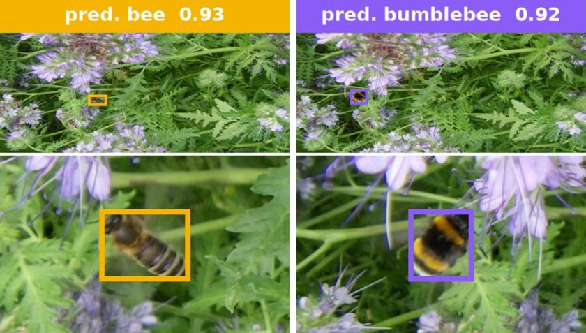
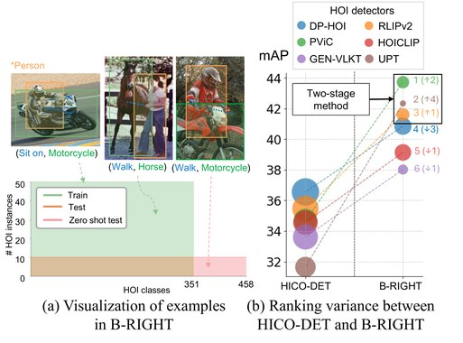
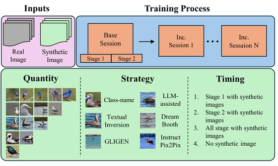
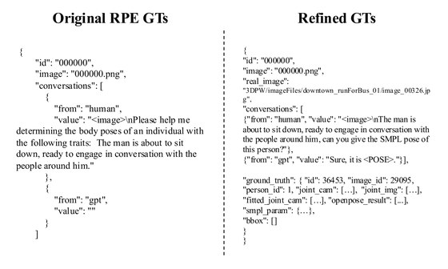
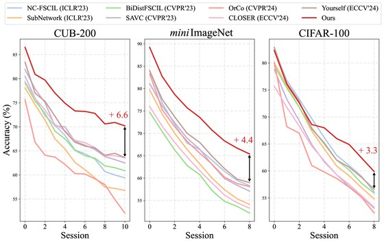
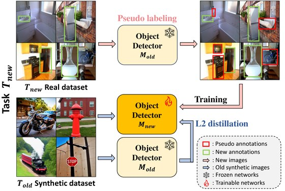
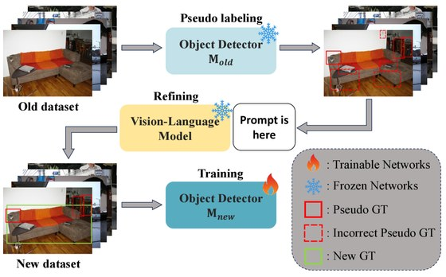
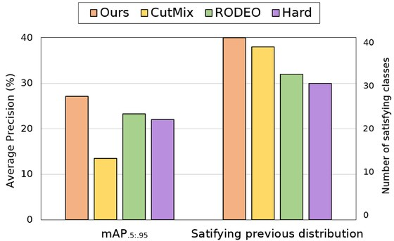
Training-free language querying of animatable Gaussian avatars in space and time.
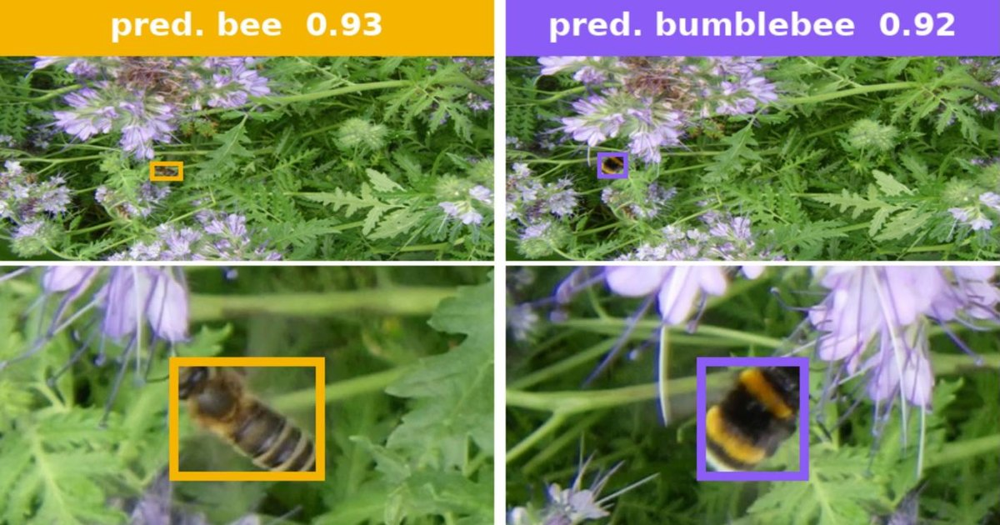
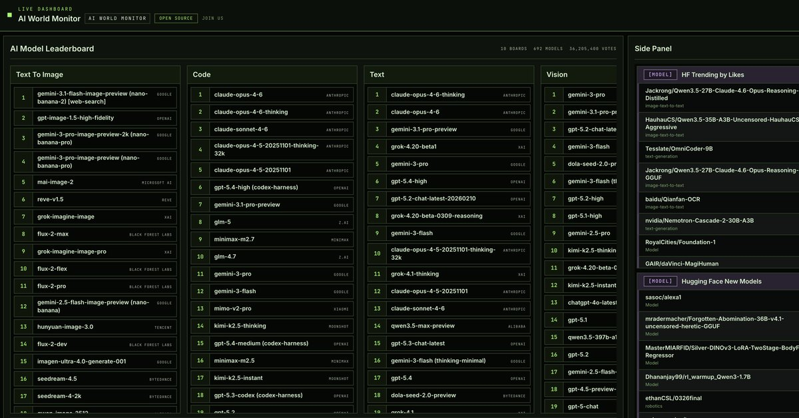
Live dashboard for AI papers, models, benchmarks, and news, with local LLM summaries.
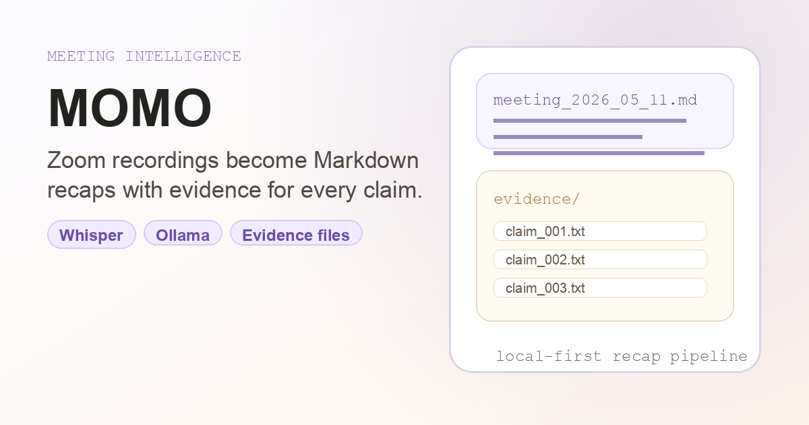
Local pipeline that turns Zoom recordings into evidence-linked meeting notes.
BeeHunters · 1st of 37 teams, BuzzSpot Challenge @ ECCV 2026
경상일보
SDDGR · CVPR 2024 Highlight
UNIST News Center
Language Models & RAG
Computer Vision
Pukyong National University · JetBot hands-on seminar · Record
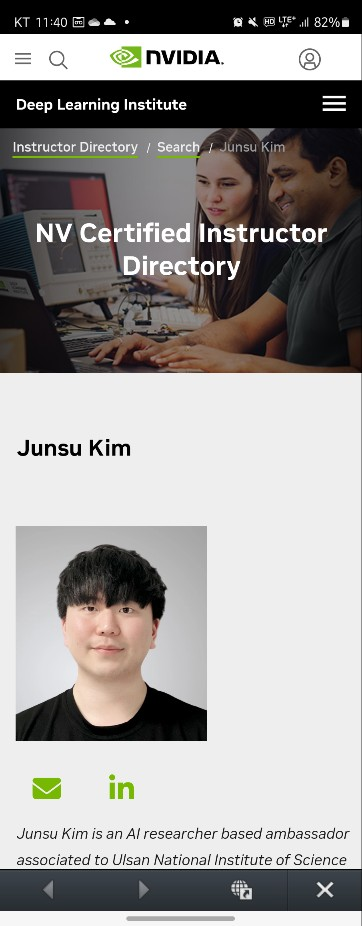